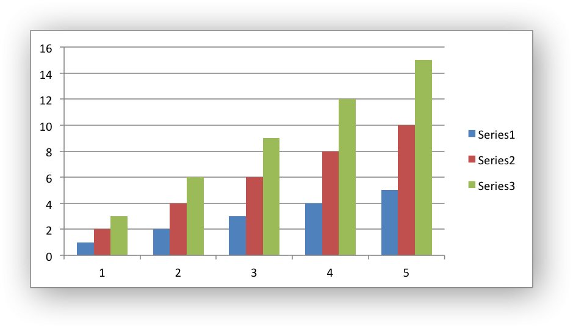

An example of creating a simple column chart with 3 data series.

#include "xlsxwriter.h"
uint8_t data[5][3] = {
{1, 2, 3},
{2, 4, 6},
{3, 6, 9},
{4, 8, 12},
{5, 10, 15}
};
int row, col;
for (row = 0; row < 5; row++)
for (col = 0; col < 3; col++)
}
int main() {
write_worksheet_data(worksheet);
}